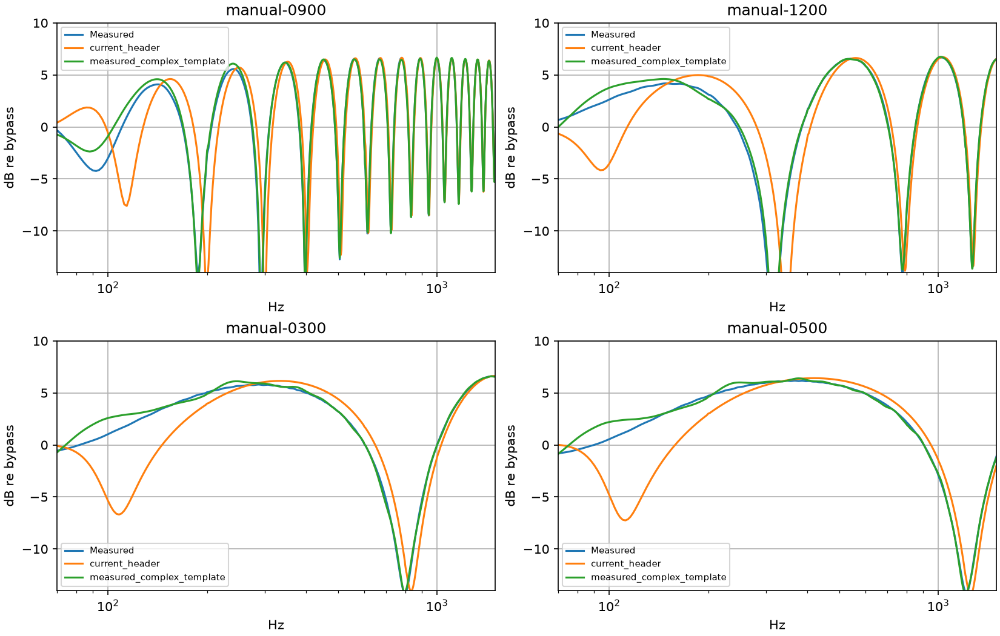
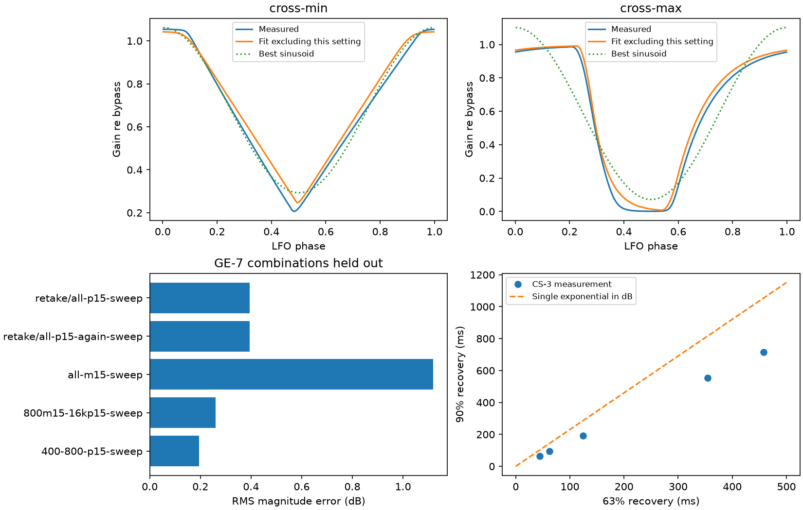

30 October 2026 · All nine captured pedals · Octave lower priority
Next session: start with the 30 October handoff for current decisions across all nine pedals, branch/data layout, completed capture plans, restored interface state and the suggested offline work queue.
NS-2 model selection: five offline candidates fail whole-level and older-note validation, despite strong local packet fits. Keep the current production model; no additional capture is needed. The interface has been restored to its pre-capture profile.
NS-2 capture stage completed: the matched-history results establish nearly shared early opening across Decay extremes, Decay-dependent late behavior, and failure of threshold-only corrections. No further captures are requested now; a fixed one-second attack or extra state is not yet a validated replacement.
CS-3 follow-up completed: the crossed-level validation and one-state release candidate supersede the initial detector-domain preference below. A log release toward a latent floor predicts the new recovery curves; low-frequency distortion and pick transients still limit the complete prototype. The earlier six-take validation preserves the preceding evidence and frozen predictions.
New BF-3 captures: prospective validation with fixed controls supports the phase candidate with one timing calibration and no per-evaluation retiming. See that report for the current prototype recommendation and remaining limits.
Continuation: the BF-3 phase and PH-3 calibration follow-up tests a smaller BF-3 filter with explicit discrete feedback timing, corrects the analyzer, and checks the PH-3 gain change against an existing repeated engaged take. This audit remains the initial evidence snapshot; the continuation supersedes its open calibration question and BF-3 prototype status.
Assessment: the gray-box approach is appropriate. Keep the established architectures, especially TR-2 and GE-7. The strongest demonstrated improvement opportunity is BF-3 wet-path phase. Resolve calibration and reproducibility inconsistencies before adding model complexity. CS-3, CE-5 and DD-8 merit targeted validation, not wholesale redesign. NS-2 needs a narrowly scoped investigation of near-threshold memory. PH-3 has documented limitations but an existing positive listening verdict.
The active checkout is main at 979167b. The relevant research, metadata and implemented pedal types are on pedals/all, inspected at 922364d, and its constituent capture/DSP branches. The ZIP is an older snapshot: its index predates the OC-5 work and contains superseded gain values. I exported tracked files into /tmp/namx-dsp-audit/branch and linked the existing WAVs there. I did not switch branches or change production DSP.
New calculations in this audit: integrity and marker checks on every stored capture; bypass-window diagnostics; TR-2 fitting with cross-settings excluded; GE-7 fitting with all multi-band combinations excluded; CS-3 release-shape comparison; CE-5/BF-3/OC-5 direct-path measurements; NS-2 envelope residuals; DD-8 Standard delay/feedback measurements; PH-3 static-fit and bypass-calibration checks; and a BF-3 complex-response diagnostic across four Manual settings.
Reviewed, but not independently recreated in full: modulation-law fits for every CE-5/BF-3/PH-3 setting, DD-8 non-Standard mode identification, Ultra topology search, and OC-5 guitar comparisons. Their numbers below are explicitly described as archived when relevant. No new listening test, production C++ render, or hardware capture was performed. The BF-3 comparison evaluates the transfer function implied by current header constants; it is not a compiled-render benchmark.
Reproducible artifacts: main audit script, measurements and holdout results, response diagnostics, response results. The scripts' opening comments describe the export and execution. Source studies are captures/boss/<pedal>/README.md on pedals/all; algorithm definitions are in tools/capture and the corresponding src/dsp headers.
| Pedal | Stored recordings checked | Principal evidence |
|---|---|---|
| TR-2 | 46 | Battery/supply, sine cycles, three sweep levels, noise |
| DD-8 | 130 | Seven modes; sweeps, bursts, clicks, held tones, timing changes |
| CE-5 | 48 | Mono/wet-only, filter controls, modulation; includes one explicitly discarded take |
| BF-3 | 64 | Standard, Ultra, quiet resonance sweeps, cross-setting checks |
| CS-3 | 31 | Static levels, gain recovery, plucks, tone |
| NS-2 | 61 | Threshold ladders, jumps, slow steps, decaying notes |
| GE-7 | 72 | Four sessions, isolated/combined bands, marked sliders, overload |
| PH-3 | 102 | Static/frozen sweeps, noise modulation, modes and resonance |
| OC-5 | 45 | Tones, tracking, dyads, dry clipping, guitar reamp |
Observed: all 599 recorded stereo WAVs are 48 kHz; all corresponding played-signal hashes match sidecars; no recording sample reaches |x| ≥ 0.999. One xrun is logged in NS-2 stairs-110. An independent local correlation of each loopback chirp puts its peak within −0.047 to +0.188 samples of the stored integer alignment. This checks the marker, not timing throughout the take. Sample-rate drift, dropouts later in a take, analog clipping and incorrect knob settings are not ruled out by these checks.
Reference-window bias is real. In the BF-3 Standard and CE-5 mono bypass sweeps, about 20.6% of deconvolved impulse energy lies at wrapped negative times. Discarding it reads the reference 2.11 dB low over 500–2000 Hz. Corrected measurements reproduce CE-5 dry +0.35 dB / 0.985 ms and BF-3 dry −0.13 dB / 0.554 ms. The older archive reports roughly +2.3 and +1.8 dB. A corrected reference must propagate into fit constants, plots and acceptance tests together.
Another calibration discrepancy remains. PH-3 bypass transfer from played signal to pedal channel is −8.844, −8.843 and −8.842 dB in the original, modes and followup2 sessions, but −6.495 dB in followup: a +2.35 dB discrepancy. The loopback stays −8.279 to −8.278 dB. This localizes the change to the pedal-side path or take state; it does not identify which device/control caused it. The documentation's claim that followup2 bypass is 3 dB lower than the original is not supported by the corrected WAV analysis. Do not use free per-session mix gains as a substitute for resolving this.
Known invalid references: DD-8 Analog bypass takes and NS-2 dynamics bypass takes were recorded engaged. GE-7 first-session “Level” sweeps actually move the 6.4 kHz slider. These are documented and compensated in specific scripts, but the original metadata remains misleading to a new analysis. Add explicit exclusion/reinterpretation records with provenance. Do not silently relabel raw evidence or pool these references.
Alignment: for equal-amplitude sines, a timing mismatch Δ samples alone produces relative RMS error
ε = 2 |sin(π f Δ / fs)|.
At 48 kHz, one sample causes 13.1% error at 1 kHz and 121.8% at 10 kHz. Fit a bounded fractional delay and gain from an independent reference, then freeze them for evaluation. Separately estimate pedal transport delay and LFO phase. Do not allow arbitrary time warping to remove genuine modulation error. Verify clock drift with two widely separated broadband probes or repeated waveform segments; the existing start marker cannot establish it.
Levels: recorded calibration is guitar peak −13.5 dBFS, playback −4.67 dBFS. Several implementations assume a guitar peak of −6 dBFS at the effect input, sometimes after the amp. That is an application convention, not a recovered voltage calibration. Set one explicit reference amplitude R and express input and output levels relative to it. There is no defensible universal volts/full-scale conversion in the inspected data. A buffered pedal also does not prove that a low-impedance interface reproduces every pickup/source interaction.
Uncertainty: five-digit parameters are optimizer outputs, not five-digit measurements. By-eye settings, supply/session changes, reference errors, correlated spectral bins and missing repeats dominate. Bootstrap whole cycles or takes, not individual samples; profile coupled parameters while re-optimizing nuisance terms. Report prediction bands and repeatability before assigning circuit meaning. Starting an optimizer at its solution and obtaining the same answer establishes local convergence, not uniqueness.
Initial state and noise: the full-level marker can charge a compressor/gate or circulate in a delay. Simulate the whole played preamble or document a sufficient reset/settling interval. Do not interpret near-floor envelope ratios as signal gain. Estimate noise in the same lock-in bandwidth used for the measurement and mask or down-weight low-SNR points. A broadband noise number alone does not set the uncertainty of a narrowband gain estimate.
The clamp of an offset triangle followed by asymmetric smoothing is supported by the asymmetric dwell times, even modulation harmonics and rate dependence. It is substantially more defensible than a sine tremolo at the square/fast extreme. The 70 Hz high-pass and nearly level-independent audio path are also supported. The battery/supply difference is a session observation consistent with power dependence; one comparison does not identify its electrical cause.
tri(φ) = 1 − 4 min(φ, 1−φ) v = u0 + D [G(tri + β) − κ] c = [softplus(sv) − softplus(s(v−1))]/s g[n] = g[n−1] + (1−exp(−1/(fs τ))) [c[n]−g[n−1]] τ = τdown if c < g, otherwise τup y = T g HP70(x)
The existing supply constants are u0=1.10998, β=0.43044, κ=0.80716, s=32.3874, τdown=3.52 ms, τup=9.21 ms. At knob fractions [0,.25,.5,.75,1], G=[.6086,.8973,1.4543,2.9215,3.5130], D=[.0278,.1515,.4603,.7878,1], T=[1.0452,1.0578,1.0690,1.0410,.9952]. The measured rate range is 1.093–13.611 Hz. These are behavioral parameters; fixing Dmax=1 removes a scale ambiguity, not all parameter coupling.
New holdout result: the existing fitter includes both cross takes in its objective. Excluding both, fitting the other 13 settings, and allowing only an evaluation phase offset gives 0.0392 and 0.0401 RMS gain error, maximum errors 0.0683 and 0.0787. These are errors in units of bypass gain, not percent audio energy. At cross-max, even a freely fitted offset-plus-sinusoid has 0.1317 RMS error; at cross-min it has 0.0303, slightly better than the shared predictive model. The model's complexity earns its place across settings, not at every individual setting. Keep the accepted voicing; label the original ~1.3% median as training error. No urgent new capture.
H(s) = [1 + R Σ xi/(Zi + xi(1−xi))]
/[1 + R Σ (1−xi)/(Zi + xi(1−xi))]
Zi(s) = rsi + z0i(s/ωi + ωi/s) for six resonant branches
Z7(s) = rs7(1 + ω7/s) for the high shelf
The shared denominator accounts for measured band interaction; independent cascaded peaking EQs are not equivalent. Existing resonances near 91, 196, 370, 729, 1529 and 3281 Hz, Q≈2.8–3.3, and a shelf corner near 3.89 kHz are adequate behavioral values. The top branch could also be represented by a broad high-frequency resonator over the measured band; the simpler shelf is preferable. Absolute component values and the Level stage's fitted resistor ratios are not uniquely identified.
New holdout result: fit 55 flat/single-band/Level sweeps, exclude all five combination sweeps. Training RMS is 0.203 dB. Two-band predictions are 0.196 and 0.261 dB; the two all-up retakes are 0.394 dB each; all-down is 1.120 dB, maximum 1.389 dB. All-up maximum error reaches 1.576 dB although below-5-kHz RMS is 0.288 dB. This supports generalization and exposes the extreme-cut limitation hidden by the 0.23 dB joint-fit headline. These settings were used during prior architecture selection, so this is parameter holdout, not an untouched prospective test.
The rounded clip reproduces a ceiling but not reactive overload shape. “One observed output ceiling” does not establish identical clipping at every internal stage. Keep the approximation unless overload listening reveals a problem. Validate the existing digital realization separately from the continuous-time fit: its documented high-frequency warping is a second source of error.
Recomputed top slopes are 0.015–0.017 dB/dB, supporting a near-limiter. The implementation uses 0.0117 (about 85:1) from its separate fit; ~66:1 is a summary of the measured staircase, not the same estimator. Sustain as pre-limiter gain, followed by tone and output gain, is a useful behavioral decomposition. High-Sustain uncompressed gain is weakly constrained near the lowest available steps; do not infer an exact internal VCA law.
Initial falsification, now qualified: measured t90/t63 recovery ratios are 1.48–1.56. A single exponential of gain in dB toward the measured final gain predicts approximately 2.30. On the same 5–1199 ms post-drop windows, that two-parameter dB exponential has 0.48–1.81 dB RMS error; a decaying linear-domain excess followed by logarithmic gain has 0.20–0.74 dB. This comparison did not test an exponential toward a more distant latent asymptote stopped by input recapture. The crossed-level follow-up supports that alternative and supersedes a broad inference that the detector must use the amplitude domain. The current C++ follows rectified amplitude in the linear domain.
E[n] = E[n−1] + a± (|x[n]|−E[n−1])
L = 20 log10(max(E/R, ε))
GR = −(1−m) max(0, L+G−C)
y = Level · Tone{x · 10^((G+GR)/20)}
Retain current detector time constants as a baseline: attack [1.97,1.82,1.87,1.68,1.58] ms and release [189.1,145.9,49.6,24.3,16.4] ms across the five Attack positions. These are not the observed 6–14 ms settling or 44–458 ms recovery times. Use C≈−14.25 dB relative to R at full Level and m=.0117 as implementation baselines; do not replace them with the simplified diagnostic fit's time constants. Need a different jump size and carrier before claiming envelope dynamics generalize.
The two-envelope hysteretic attenuator is a sensible low-cost model of the measured Input→Output configuration. Re-evaluation reproduces median 1.52 dB RMS over 39 gain envelopes, but Threshold-max staircase is 4.61 dB, light picking 3.68 dB and one pluck take 3.15 dB. These are reused fitting takes. The ~1 s creep near threshold is not explained by the present state equations and should not be attributed to a known circuit without further evidence.
E,V: instant upward tracking of input level L in dB;
downward one-poles with time constants τ and 7.937τ.
Open above E=T+1.286; close below E=T+1.286−10.473.
B=0 when open; otherwise approach −7.564 dB with time constant 4.419τ.
gain_dB = .6 + B − .889 max(0,T−V).
T=[−69.4,−69.02,−66.72,−49.4,−27.33] dB relative to R and τ=[24.58,63.49,92.97,145.11,460.26] ms are the fitted maps. The C++ adds a peak detector with a 50 ms fall before these states; its low-frequency ripple and history are not captured by a tone-envelope-only fit. Follow-up: the matched-history experiment confirms near-threshold upward motion, but rejects a universal one-second rise and shows late Decay dependence. First test a nonlinear update of existing states; an extra state is not yet justified. Preserve prompt opening and keep Send/Return sidechain routing outside this identification claim.
Standard's delay-plus-filtered-feedback structure is supported; three evenly spaced Ultra wet taps at d/2,d,3d/2 are supported at low Res. Manual≈14.673→0.447 ms; Standard feedback pass gains [0,.146,.394,.668,.849]; floor≈.33 ms; a 1.53 Hz smoothed triangle raised to 2.5 with Depth-dependent floor/swing is a useful sweep model. The archived high-Depth residuals of 190–325 µs are larger than the 28–73 µs errors at modest Depth. Ultra feedback wiring remains a hypothesis: its reported residual reaches 23%, much larger than its reported 0.2% floor.
New result: the analysis script still contains pre-correction dry/wet gains +1.79/+3.41 dB and old filters, while the header has −0.13/+1.45 dB and refitted filters. Thus running “model_fit” does not test the current model. With current header coefficients and a bounded ±4% delay adjustment, four Res-minimum Manual settings produce:
| Manual | Current model RMS, 100 Hz–10 kHz | Measured complex template RMS | Current / template RMS, 80–200 Hz |
|---|---|---|---|
| 9:00 | 0.942 dB | 0.227 dB | 5.415 / 1.013 dB |
| 12:00 | 1.186 dB | 0.211 dB | 2.967 / 0.644 dB |
| 3:00 | 0.837 dB | 0.242 dB | 4.354 / 0.815 dB |
| 5:00 | 0.856 dB | 0.432 dB | 4.748 / 0.862 dB |
The diagnostic uses the complex dry/wet responses measured at Manual 7:00, translates the wet in time, and adjusts only delay on the other takes. It is a nonparametric diagnostic, not a proposed long-FIR implementation or a strictly untouched test set. It changes both magnitude and phase; the result strongly implicates the phase-sensitive wet representation but does not isolate phase as the sole cause. At Manual 12:00 the current model predicts −3.54 dB at 100 Hz versus measured +2.63 dB. This is large enough to prioritize a bass-region comparison by ear. Remaining template error below 200 Hz warns of time-window contamination or nonconstant dry/wet response.
At a frozen setting: H(f) = gd Hd(f) + gw W(f)e^(−j2πfd) / [1−r W(f)e^(−j2πfd)].
Fit W jointly to the complex long-delay wet response and several full static combs. Separate common transport delay from relative wet delay; fix W's gain convention at 1 kHz. Start with the existing four biquads, then test a simpler magnitude section plus at most one or two stable phase-correction sections. Select order on held-out Manual/Res settings. No replacement coefficients are certified by this audit. Do not move filters across a time-varying delay assuming they commute: that equivalence only holds for stationary LTI measurements.

Recomputed dry is +.35 dB, .985 ms; wet-only delay after dry is 5.434 ms. Wet-only routing makes this substantially better constrained than subtracting two nearly cancelling captures. Keep the shared input clip, dry branch, modulated wet delay, wet-level clip, resonant low shelf and high-cut control. The bowed-triangle depth/rate maps are supported by the archived tone-phase analysis, including the lower-frequency check that resolves 1 kHz phase-period ambiguity.
Current maps: E.Level [−20.85,−16.80,−10.47,−2.67,+2.70] dB; rate≈.25–5.93 Hz; measured total wet delay minima [6.368,6.078,5.835,5.737,5.713] ms and swings [.033,.621,1.440,2.133,2.422] ms at .86 Hz. Subtract the common dry latency when implementing relative delay, and account for the implemented filter's delay. The low shelf's Q≈1.12, corner≈103–315 Hz, floor≈0 to −41 dB; High is approximately a first-order low-pass, 639 Hz→open.
The seven-biquad wall approximates a measured nearly linear-phase cutoff. “A chorus doesn't care” about phase is too strong: mono dry/wet interference does care. Validate the summed response and transient output, not only wet magnitudes. A .07 ms scalar delay correction cannot remove frequency-dependent group-delay error. Do not add an FIR by default; retain the cheaper approximation if listening and summed-response tests justify it. Stereo is a wet/dry routing approximation; the archived ~2 dB difference in wet-only versus mono high-frequency response remains omitted.
Recomputed Standard delays are [19.65,169.62,385.62,582.60,799.60] ms. The Level map [mute,−33.59,−13.42,−2.64,0] dB relative to maximum is reproduced. At Feedback 9:00 and 12:00 the measured successive 1 kHz losses repeat to about .02 dB; at 3:00 they vary −.46 to −.79 dB. The maximum-feedback click trend is +.018 dB/repeat over 16 repeats, with nonmonotonic amplitudes. That supports a practical hold, not proof of mathematically exact unity feedback forever.
r[n] = Floop{delay_d(v)}
v[n] = S(x[n] + k Ffeedback{r[n]})
y[n] = x[n] + gLevel Fout{r[n]}.
Here Floop is the loop tone filter; use the existing mode tables. Archived small-signal maximum wet gains are +4.46/+6.03/+7.90/+2.85 dB for Standard/Analog/Tape/Warm. Analog's progressive darkening supports filtering in the loop; Tape/Warm placement is not established. Current code puts their voicing outside the loop, a defensible stable approximation but not an identification conclusion. At Feedback maximum Analog intentionally grows about +.4 dB/pass and requires bounded saturation.
Current input clip thresholds relative to R are −4.10/−6.12/−7.75/−2.46 dB for Standard/Analog/Tape/Warm; these fit constants differ from rounded study descriptions. Static gain curves alone do not uniquely place the clip before versus after feedback summation. The archived 3–6 dB H3 overprediction means matching gain loss is not sufficient validation. Measure harmonic phase and multiple carriers before adding nonlinear memory. Preserve a separate output-level control rather than moving the nonlinear threshold with Level.
Archived modulation supports Mod's 1.51 Hz, ±.62 ms delay and Tape's .53 Hz wow plus 6.7 Hz flutter. For a sinusoidal delay excursion A seconds at fm, small-signal pitch RMS in cents is approximately (1200/ln 2)·2πfm A/√2; this makes the existing Tape excursions .405 ms and .0093 ms consistent with the reported 1.65/.48 cents. The 2.4 dB Tape level wobble is omitted; add it only after a phase-resolved measurement and listening comparison.
Reverse's irregular-onset captures support onset-triggered reverse chunks (about .222–2.497 s across measured settings), not a free-running fixed grid. Onset threshold and join shape remain unmeasured. Shimmer supports plain repeats plus an octave-up diffuse branch, not an octave raised on every feedback pass; it was deliberately not pursued. GLT lacks measurements, and Warp/Looper/+RV are excluded. No claim of a validated model for those modes is warranted.
A(z) = product of second-order all-pass sections H0(z) = Tone(z) [gd + gw A(z)] Hres(z) = s Tone(z) [gd + gw A(z)] / [1−k z^(−1) HP(z) A(z)] 12-stage candidate: product of two dry-plus-three-section branches.
All-pass chains, repeated notch trajectories, Rate/Depth behavior and resonant feedback are supported. Double-notch slopes support a repeated-zero response in 12 Stage; they do not uniquely prove two physical six-stage processors. The delayed-LFO interpretation of split pairs is plausible, not measured directly. All-pass pole locations from magnitudes alone, tone/mix scale and internal feedback nodes are ambiguous.
Recomputed old static-model errors are 1.076/1.123/1.242/.824 dB for 4/8/10/12 Stage, confirming the corrected-reference warning. The updated C++ tone/mix coefficients improve those fits, but its 8/10 Stage sweeping section sets differ from the good static sets. The study explicitly reports 6–10 dB errors at minimum Depth. Do not quote the static-fit 0.14–0.48 dB results as whole-implementation accuracy.
Keep two/four/five all-pass sections for 4/8/10 Stage; the twin three-section architecture for 12; a moving all-pass ladder for Rise/Fall; and sample-and-hold control for Step. Typical maximum feedback k≈.68–.71; the 8-stage measured Res ladder is [.245,.443,.634,.698]. Preserve pole stability and sweep continuity at each supported host rate. Fast Step hold, 12-stage lag, 4-stage resonance and Rise/Fall resonance remain approximate. A useful next offline fit ties static and frozen/sweeping responses together with smooth per-section trajectories instead of forcing one common scale onto inconsistent section sets. Since the branch records “sounds real good in all modes,” these are conditional improvements, not grounds to replace an accepted effect.
Recomputed dry latency is 1.006 ms, gain +.33 dB and dry clip threshold −8.1 dB relative to the capture reference. Those are well-supported behavioral measurements. They do not prove a specific internal clip location beyond the experimentally tested signal paths.
The archived guitar comparisons invalidate treating accurate single-sine pitch/level as sufficient. A filtered, envelope-scaled square can resemble a sine-driven divider but lose guitar partials; products such as q·xband, q·|xfund| and q·E can share fundamental behavior while differing strongly in timbre. The recorded 49/57/33% explained-variance comparisons used a flip state extracted from the target output; they are oracle diagnostics, not deployable prediction. Low coherence of an octave-shifted signal with the input does not by itself rule out leakage or establish topology.
Poly Range as an eighth-order spectral low-pass is only one hypothesis: it also removes upper harmonics of low notes. Note-selective processing would preserve those harmonics while excluding high fundamentals. Held sines cannot distinguish the two. Preserve the dry path and measured level taper [mute,−9.7,0,+4.6,+6.1] dB relative to noon, but defer new timbre machinery until wet-only guitar captures discriminate the candidates. No new neural model or 15–30 minute capture set is justified for the first discrimination experiment.
Retain current pedals/all architectures and control tables unless the evidence above identifies a failure. All constants above are baselines, not newly certified production coefficients. The immediate scientific deliverable for a coding agent is a reproducible measurement/fit contract; a new BF-3 coefficient set still requires constrained fitting and validation.
First use existing data: synchronize fit tables with headers, investigate the PH-3 bypass discrepancy, perform BF-3 complex fitting, and reserve validation takes. New capture amplitudes below are relative to the calibrated guitar peak; verify actual loopback amplitude. Record a clean bypass before and after each series, log supply and controls, and keep full preambles. Randomize level/order within a fixed setting where history matters.
| Priority / capture | Signal, amplitude and settings | Hypothesis and interpretation |
|---|---|---|
| 1 · Shared calibration and repeatability | One ~10 s packet: 1 kHz at −24/−12 dB, a quiet broadband probe at each end. Bypass; then one fixed nonmodulating engaged state; bypass again without changing gain. Repeat only the suspect PH-3 setup initially. | Stable loop but changing pedal-side reference identifies path/state instability; both moving suggests interface/output changes. End probes estimate drift. Establishes uncertainty rather than fitting it away. If the old PH-3 state cannot be recreated, flag its absolute gains as unresolved. |
| 2 · BF-3 low-frequency phase, only if existing-data fit is inconclusive | One phase-coherent multisine packet spanning 70–4000 Hz, peak −24 dB; repeat at −30 dB in the same take. Depth/Res minimum; Manual 7:00, 12:00 and 5:00. Use ≥8 s per level. | Three delays change dry/wet interference while sharing tone. Level-invariant complex fits support a linear phase correction; changing normalized response implies nonlinearity. This avoids assigning low-frequency leakage from a cut impulse window to the wet filter. |
| 3 · CS-3 detector generalization | Packet of −36→−12→−36 and −24→−6→−24 dB steps, 4 s plateaus, carriers 110 Hz and 1 kHz. Sustain/Level/Tone noon; Attack minimum and maximum. Two settings. | Same detector constants predicting both jump sizes favor the existing amplitude-domain model. Level-dependent recovery implies a different detector/gain law; carrier dependence tests ripple/filtering. More informative than another identical 30 dB jump at an intermediate knob. |
| 4 · NS-2 creep — completed | The locator and matched-history captures now cover Threshold 3:00, −56/−54 dB partial-opening probes and −44 dB control, quiet/loud histories and both Decay extremes. No additional NS-2 captures requested. | Observed: nearly shared early opening, Decay-dependent late behavior, and convergence of histories at −54 dB/minimum Decay. A universal one-second pole fails; no circuit or additional state is identified. Next step is offline fitting against this archive. |
| 5 · DD-8 Tape/Warm loop placement | 50–80 ms 100 Hz, 1 kHz and 4 kHz bursts, each at −24 dB peak, ≥8 s gaps. Time noon, Level maximum, Feedback noon. One take per mode. | Frequency-dependent loss that accumulates per repeat supports in-loop coloration; a colored first repeat followed by a different repeat-ratio spectrum supports output coloration plus a simpler loop. Short bursts avoid LTV sweep smearing. |
| 6 · CE-5 mono phase/control check | Short broadband packet at −24 dB and isolated 110 Hz/1 kHz bursts at −12 and 0 dB. Depth minimum, E.Level maximum, Low/High maximum; then one combined Low/High noon setting. Mono output. | Correct wet magnitude but wrong summed comb supports phase correction. The second setting tests independent control composition. Loud bursts test clip/filter ordering; no discrepancy means keep the current model. |
| Conditional · GE-7 all-cut repeat | 20 Hz–20 kHz sweep at −12 dB, all seven bands at minimum; Level held fixed. Bypass/flat/all-cut repeated without moving Level. | A repeatable ≈1 dB offset supports model inadequacy; disappearance implicates setting/reference variability. Existing two-band holdouts do not justify a broad new sweep grid. |
| Conditional · PH-3 fast Step | 1 kHz and 3 kHz carriers, separately at −24 dB, 10 s each. Step, Depth maximum, Res minimum, Rate 3:00 and 5:00. | Repeated abrupt gain/phase changes test actual hold duration and an eight-step lock. Different carriers separate state transitions from one carrier crossing a notch. Capture only if fast Step similarity matters after listening. |
| Low · OC-5 discrimination | A 20–30 s guitar phrase on several strings, soft/hard picks, plus a harmonic-rich 110 Hz test and a 110+660 Hz dyad, all at −12 dB peak. Direct off; Vintage −1 alone at noon; Poly −1 alone at Range noon and maximum. Three settings. | Wet-only avoids uncertain dry subtraction. Changing input harmonics at fixed fundamental tests multiplier versus synthesized-wave models. Range preserving low-note upper harmonics but rejecting an independent high note favors note selection over spectral low-pass. Expand the dataset only after choosing the structure. |
No new TR-2 capture is necessary for the current intended quality. Ultra high-Res, PH-3 12-stage lag and Reverse onset thresholds are optional follow-ups tied to an audible failure, not prerequisites for useful effects.
Use three separate comparisons: measured pedal versus mathematical model; mathematical model versus C++ render; and level-matched pedal versus application listening. A good fit to a surrogate does not establish agreement with the pedal. Preserve an untouched capture block for the final decision; existing exploratory data cannot become fully independent merely by renaming it a test set.
| Behavior | Report | Proposed decision rule, not a universal audibility threshold |
|---|---|---|
| Linear/comb response | Log-frequency magnitude and complex residuals; notch frequency/depth; group delay; separate bass/mid/treble results | BF-3 candidate should reach <.5 dB RMS over 100 Hz–10 kHz on held-out static settings and materially reduce 80–200 Hz error toward <1.5 dB, without worse resonance or new latency. Validate compiled interpolation too. |
| Modulation | Rate, min/max delay or gain, dwell/edge times, modulation harmonics, cycle-to-cycle variation | Beat the baseline at unseen Rate×Depth×Manual settings. For TR-2, preserve ≈4% cross-setting envelope RMS or better and the accepted sound; do not chase small training-only improvements. |
| Dynamics | Attack overshoot; 10/63/90% recovery; envelope residual by phase of note; errors above measured noise | CS-3 constants must predict the second jump size/carrier without retuning. NS-2 creep changes should improve near-threshold steps without degrading pick opening or decaying-note tails. |
| Nonlinearity | Fundamental gain, H2–H7 levels and phase, intermodulation, aliasing, input/output plots at several amplitudes | A lower gain-error percentage alone is insufficient if the candidate worsens harmonic balance or attack sound. Compare threshold conventions before adjusting saturation. |
| Pitch/reverse | Pitch error, wrong-octave rate, onset-to-stable-pitch latency, dropouts, spectrum and note ordering | Envelope reaching half its peak is onset rise time, not proof that pitch is locked. Test harmonic-rich notes, transitions and dyads separately. |
| Real-time application | 44.1/48/96 kHz behavior, block-size independence, worst-case control changes, tail stability, CPU/allocation trace | No callback allocations, bounded output, no extra dry latency unless explicitly accepted, and no regression on a representative guitar passage. |
For waveform error report ESR = Σ(y−ŷ)²/Σy² and its dB value, plus normalized RMS = √ESR. Never call both “percent error.” For free-running modulation, report aligned and unaligned comparisons separately; align one phase offset, not every cycle independently. Compare against repeat-to-repeat residuals where available. Strong notch errors can inflate dB metrics near zeros; use a measured noise floor and also report notch location/depth rather than hiding them behind a fixed clipping floor.
Listening should use the same guitar DI, matched output loudness, normal controls and one difficult extreme per pedal. Include clean guitar and a representative downstream amp. Preserve attack/tail context; instantaneous nulls between independently phased modulation or divider signals are not perceptual verdicts. Keep TR-2 and the accepted PH-3 as baselines until a candidate wins both the relevant measurement and a controlled listening comparison.

Methodological context: gray-box phaser work also separates interpretable filter structure from numerical fitting (Carson et al., DAFx 2023). For explicit harmonic-system identification, synchronized swept-sine techniques separate nonlinear responses rather than treating a clipped sweep as a single LTI impulse (Novak et al., DAFx 2009). Neither source establishes the circuitry of these measured pedals.